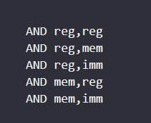
always clear the OF, CY flags and modify SIGN, ZERO, PARITY when destinated operand occur at such.
it useful for bit masking (convert to uppercase, lowercase, clear bit in positiion n) ex: AND AL, 11111011; clear bit 2
same operand as AND, clear OF, CY and modify SIGN ZERO PARITY
is useful to set a bit in any pos we want without affect the other ex: or AL, 00000100; set bit 2
if OR AL, AL
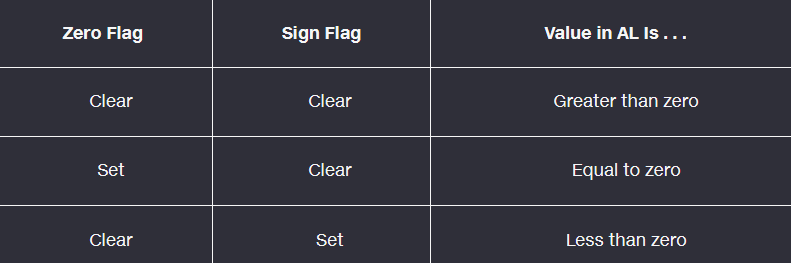
useful for toggle bit, 1 and 0 when xor. can only XOR for 8 bit
clear the OF and CY and modifies the SIgn, Zero, and Parity flag.
example:
Usefor checking Parity flags
8 bit:
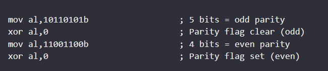
16 bit:
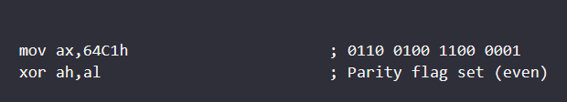 4 1s ( even)
32 bit:
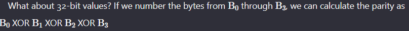
The TEST instruction always clears the Overflow and Carry flags. It modifies the Sign, Zero, and Parity flags in the same way as the AND instruction.
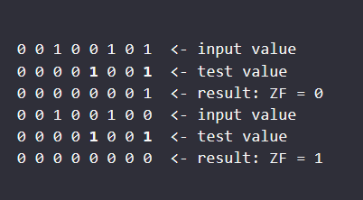
CMP
destination,source
same operand combinations as the AND instruction.
change the OF, Sign, ZEro, carry, Auxiliary Carry and parity flags.
This is for unsigned comparison.
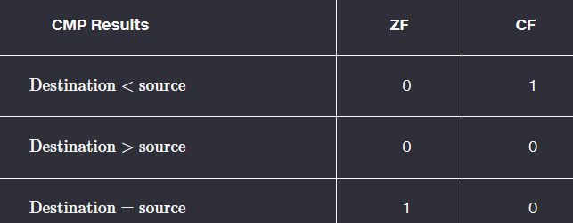
signed operands are compared:
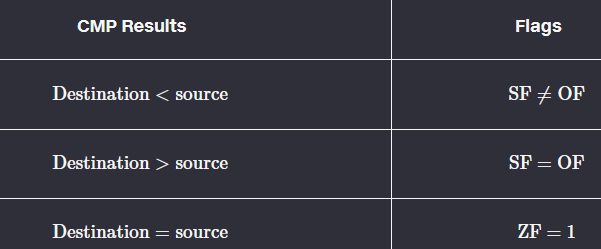
TIPS;
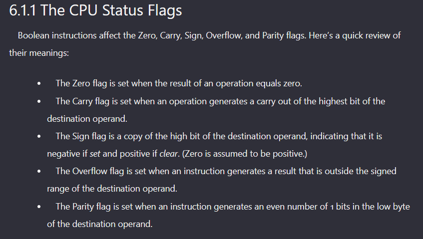
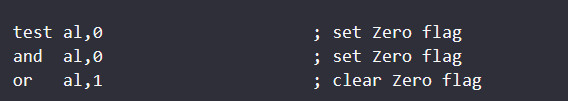
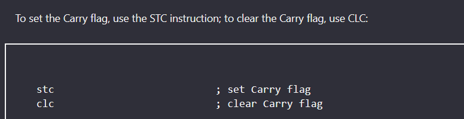
JUMP CONDITION
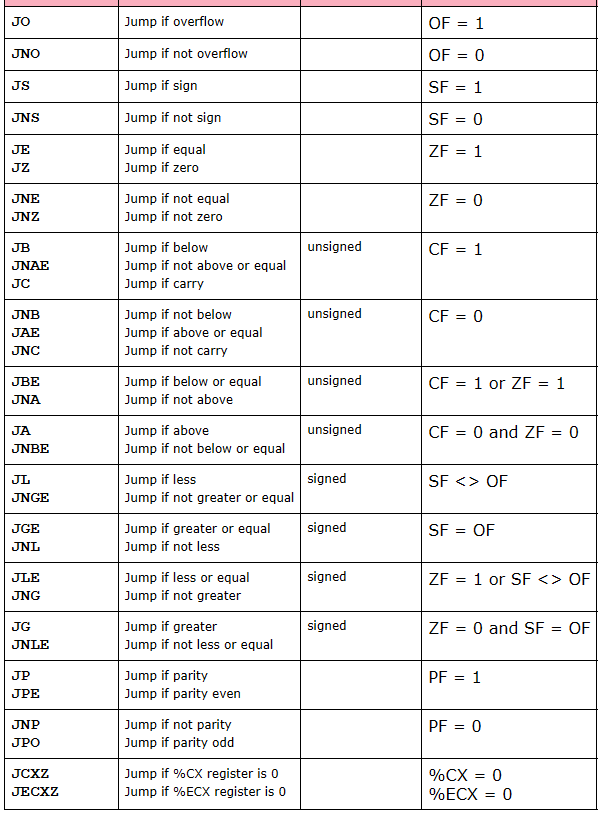